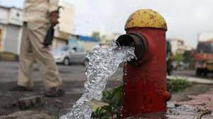

Water, the essence of life, is a finite and irreplaceable resource that sustains all living beings on our planet. However, the world is facing an ever-increasing challenge: the wastage of this precious commodity. While it may seem like water is abundant, the truth is that its availability is limited, and the causes of its wastage are manifold. From the smallest household leaks to large-scale industrial practices, the consequences of water wastage reverberate across ecosystems and human societies alike. In this discussion, we will delve into the various factors contributing to the squandering of this invaluable resource, emphasizing the urgency of taking action to preserve and protect our water for a sustainable future.
Water wastage occurs due to a combination of factors, including:
Here are a few other factors that have been leading to water wastage all around the world:
Negligence & Theft: As much as 22 to 25 per cent water is wasted during transmission and distribution or due to theft. A survey was conducted by the Municipal Corporation which reveals that water is being used illegally at several locations with no checks in place. Amongst the biggest defaulters are:
Service Stations: Owners of Small Eating Joints. Illegal Establishments. While Theft of water remains a pressing issue, high negligence towards water wastage is not far behind. To list a few:
Most societies and buildings let overhead tanks are left overflowing every morning. The flow rate ranges from 400 to 650 L. Letting the overhead tank flow for even 5 minutes results in wasting 2000 to 3100 L. Many buildings have leaky and faulty pipelines. Even the distribution lines within cities have faulty plumbing. These are the reasons for constant wastage of water.
Flushing Systems:As unlikely as it may seem, this is a major cause in households, restaurants, multiplexes, offices etc. Flushing systems waste water in the following ways:
When disposing general waste, paper napkins and other bathroom waste via flushing, approximately 6 to 13 L of water is consumed. In other words, every time the toilet is used 6 to 13 L water is wasted. Often due to faulty plumbing, there is leakage in the flush tank. This leads to automatic refilling of water and may also hear the sound of flushing. This may also be called Phantom Flushes. Even today around 40% installments use older flushing systems. For every flush these systems consume 13.6 to 16 L of water. 
Approximate water wasted per person per day= 13 L
Approximate water wasted per person per month= 390 L
Approximate water wasted per person per day= 4745 L
Understanding these causes is the first step in combating water wastage and promoting responsible water use.